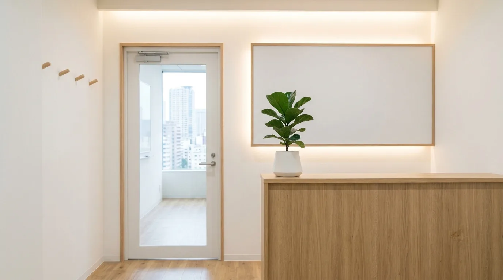

REVISION v4.1 — COMPANY2 POSITIONS / FUKUOKA
採用情報 Recruit
条件を先に、
全部書いておきます。
いま2職種で仲間を探しています。Webアプリケーションエンジニアと、Webディレクター（進行管理・運用担当）です。仕事の中身と労働条件を先に全部書きました。読んで合いそうだと思ったら、メールでご連絡ください。
いま募集している2職種
OPEN POSITIONS9名の会社です。人が増えると、進め方も少しずつ変わります。だから採用でも、いま決まっていることと決まっていないことを分けてお伝えします。ここに書いた労働条件は、入社時の契約書に書く内容とそろえています。
| 職種 | 雇用形態／募集人数 | 賃金（月給） |
|---|---|---|
| JOB-01 Webアプリケーションエンジニア |
正社員／1〜2名 | 28万円〜45万円 |
| JOB-02 Webディレクター （進行管理・運用担当） |
正社員／1名 | 25万円〜38万円 |
賃金は経験と能力を考慮して、上の幅の中で決定します。どちらの職種も固定残業代は含みません。時間外労働の分は、別途全額を支給します。就業場所・就業時間・休日・社会保険などの共通条件は、この下の v4.1-04 にまとめました。

- 就業場所は本社（福岡市）です。転勤はありません
- 業務に応じて在宅勤務ができます（週2日まで）
- 時間外労働は月平均10時間程度です
- 選考で見るのは、これまでやってきたことと、担当したい仕事の内容だけです
※写真はイメージです。これはRESCが作成したサンプルサイトのため、実在の拠点・募集を示すものではありません。
JOB-01 — Webアプリケーションエンジニア
ENGINEER業務システムとWebアプリの設計と実装を担当します。要件の整理から、フロントエンド／バックエンドの実装、リリース後の運用まで。担当する範囲は、ご本人の希望と経験に合わせて相談して決めます。
- よくある状態：担当する範囲が決まっておらず、何をどこまでやるのかが入社後に分かる
- やっていること：担当範囲は入社前の面談で相談して決め、入社後も区切りごとに見直します
- やっていること：2週間ごとに動くものを見せながら進めるので、フィードバックは早く返ってきます
| 項目 | 内容 |
|---|---|
| 職種 | Webアプリケーションエンジニア |
| 雇用形態 | 正社員 |
| 業務内容 | 業務システム・Webアプリの設計と実装。要件の整理から、フロントエンド／バックエンドの実装、リリース後の運用まで担当します。担当範囲は本人の希望と経験に合わせて相談します |
| 求める経験 （必須） | Webアプリケーションの開発経験（実務・個人開発は問いません）／Gitを使った共同開発の経験 |
| 求める経験 （歓迎） | TypeScript／React／クラウド環境（AWSなど）の利用経験／業務システムの開発経験 |
| 賃金 | 月給 28万円〜45万円 経験・能力を考慮して決定します |
| 賃金の内訳 | 固定残業代は含みません。時間外労働の分は、別途全額を支給します |
| 募集人数 | 1〜2名 |
| 就業場所 | 福岡県福岡市〇〇区〇〇8-6-2（本社）／業務に応じて在宅勤務可（週2日まで）。転勤はありません |
| その他の条件 | 就業時間・休日・休暇・諸手当・昇給賞与・社会保険・試用期間・受動喫煙防止措置は、2職種共通です（v4.1-04） |
JOB-02 — Webディレクター（進行管理・運用担当）
DIRECTOR案件の進行管理と、お客さまとの窓口を担当します。要件の整理、スケジュールと課題の管理、リリース後の運用の取りまとめまで。1案件の窓口は1人に固定しているので、相談から運用まで同じ人が見続ける形です。
| 項目 | 内容 |
|---|---|
| 職種 | Webディレクター（進行管理・運用担当） |
| 雇用形態 | 正社員 |
| 業務内容 | 案件の進行管理とお客さまとの窓口。要件の整理、スケジュールと課題の管理、リリース後の運用の取りまとめを担当します |
| 求める経験 （必須） | Web制作・システム開発いずれかの進行管理の経験／文章で要点をまとめられること |
| 求める経験 （歓迎） | 業務システムの導入や運用に関わった経験／簡単な画面設計ができること |
| 賃金 | 月給 25万円〜38万円 経験・能力を考慮して決定します |
| 賃金の内訳 | 固定残業代は含みません。時間外労働の分は、別途全額を支給します |
| 募集人数 | 1名 |
| 就業場所 | 福岡県福岡市〇〇区〇〇8-6-2（本社）／業務に応じて在宅勤務可（週2日まで）。転勤はありません |
| その他の条件 | 就業時間・休日・休暇・諸手当・昇給賞与・社会保険・試用期間・受動喫煙防止措置は、2職種共通です（v4.1-04） |
※写真はイメージです。これはRESCが作成したサンプルサイトのため、実在の担当者を示すものではありません。
- よくある状態：窓口と実装の担当が分かれていて、伝言のたびに内容が薄くなる
- やっていること：窓口は1案件1人に固定し、定例にも実装の担当が同席します
2職種に共通の労働条件
CONDITIONSここから下は、JOB-01・JOB-02 のどちらにも共通する条件です。入社時にお渡しする労働条件通知書にも、同じ内容を書きます。読んで分からないところがあれば、面談の場でそのまま聞いてください。
| 項目 | 内容 |
|---|---|
| 雇用形態 | 正社員（期間の定めなし） |
| 就業場所 | 福岡県福岡市〇〇区〇〇8-6-2（本社）／業務に応じて在宅勤務可（週2日まで） 転勤はありません（事業所は本社のみです） |
| 就業時間 | 9:30〜18:30（所定労働時間8時間） 時間外労働あり（月平均10時間程度） |
| 休憩 | 60分 |
| 休日 | 土曜・日曜・祝日 |
| 休暇 | 年末年始、夏季休暇、年次有給休暇（法定どおり付与）、慶弔休暇 |
| 賃金 | JOB-01：月給 28万円〜45万円／JOB-02：月給 25万円〜38万円 いずれも経験・能力を考慮して、この幅の中で決定します |
| 固定残業代 | ありません。時間外労働の分は、時間数に応じて別途全額を支給します |
| 諸手当 | 通勤手当（実費支給・上限あり）、資格取得の費用補助 |
| 昇給・賞与 | 昇給 年1回／賞与 年2回（会社の業績と本人の評価によります） |
| 社会保険 | 健康保険・厚生年金保険・雇用保険・労災保険に加入します |
| 試用期間 | あり（3ヶ月）。試用期間中の労働条件に変更はありません |
| 受動喫煙防止措置 | 屋内禁煙 |
条件が変わるときは、この版を上げて書き直します。掲載している内容と、面談でお伝えする内容が食い違っていた場合は、面談でお伝えした内容が正になります。
入社してからの最初の3ヶ月
FIRST REVISIONS入る人の仕事も、案件と同じように版を重ねます。いきなり全部を持つのではなく、小さく持って、区切りごとに範囲を広げる形です。ここに書いたのは、いま社内でやっている進め方です。人によって速さは変わります。
最初の3ヶ月は3つの版に分けています。v0.1 は最初の1ヶ月で、既存の案件に入って環境と進め方に慣れる期間。v0.5 は2ヶ月目から3ヶ月目で、担当を持って区切りごとの実装や進行を受け持つ期間。v1.0 は3ヶ月目以降で、1案件の担当として窓口や実装をひととおり持つ状態です。青い印はその版でできるようになること、灰色の印はこれからの範囲です。
FIG.v4.1-01 — FIRST 3 MONTHS図は進め方をイメージで表したものです
- その版で受け持つ範囲
- まだ受け持たない範囲
-
v0.1
環境と進め方に慣れる
- 入社前：使っている道具も、案件の背景も分からない
- この版でやること：動いている案件に入って、開発環境の用意とレビューの受け方から始めます
- この版でやること：週1回の定例と、2週間ごとの区切りに同席します
-
v0.5
担当を持って、区切りを回す
- 前の版：手を動かす範囲が、頼まれたところに限られている
- この版でやること：区切りひとつ分の実装、または進行を受け持ちます。相談先は決まった1人です
- この版でやること：プルリクエストを出す側と、読む側の両方をやります
-
v1.0
1案件の担当として持つ
- 前の版：案件全体の段取りは、別の担当が持っている
- この版でやること：1案件の窓口または実装の中心を持ちます。ここから先は版を重ねていくだけです
- この版でやること：次に入る人の v0.1 を、今度は受け入れる側でやります
進み方は人によって変わります。3ヶ月で区切っているのは試用期間の長さに合わせているためで、この期間で全部できるようになることを条件にしているわけではありません。
できるようになったことを、版で書く。
「成長できます」と書くより、いつ何を受け持つのかを並べたほうが、入る前に判断できると思っています。案件を版で進めているので、人の仕事も同じ書き方で並べました。
選考の流れと、応募の方法
SELECTION書類選考のあと、面談を2回。うち1回はオンラインでも受けられます。面談では、これまでやってきたことと、担当したい仕事の内容をうかがいます。こちらからも、条件と進め方をそのままお伝えします。
| 段階 | やること | 形式 |
|---|---|---|
| 01 応募 | メールで、担当したい職種とこれまでやってきたことをお送りいただきます | メール |
| 02 書類選考 | いただいた内容を読んで、結果をご連絡します | メール |
| 03 面談（1回目） | 仕事の内容と条件をお伝えし、これまでやってきたことをうかがいます | 対面／オンライン |
| 04 面談（2回目） | 担当する範囲と入社の時期を、具体的にすり合わせます | 対面／オンライン |
| 05 内定 | 労働条件をお示しして、ご確認いただいたうえで決定します | 書面 |
面談2回のうち、1回はオンラインで受けていただけます。両方をオンラインにしたいときは、ご相談ください。結果は、ご応募いただいた方全員にご連絡します。
- 応募方法
- メール（info@example.com）担当したい職種と、これまでやってきたことをお送りください。決まった書式はありません
- 書式
- 指定なし履歴書の様式は問いません。文章でも、つくったものへのリンクでも構いません
- 面談
- 2回（うち1回はオンライン可）所要時間は1回あたり1時間ほどです
- 受付
- 9:30〜18:30（土日祝を除く）メールの返信は営業時間内に行います
- お預かりした情報
- 選考の目的にのみ使用します選考が終わったあとの取り扱いは、応募時にお伝えします
応募の前に聞いておきたいことがあれば、メールでもLINEでも構いません。条件のことだけを聞いていただくのでも大丈夫です。
この版の次に読むもの
NEXT REVISION条件を読んだあとは、一緒に働く人と場所を見てください。会社の成り立ちとメンバーは v4.0、場所と連絡先は v4.2 にまとめています。
掲載している募集要項は、サンプルとして作成したものです。実在の企業の求人ではありません。実際の募集ではありませんので、ご応募いただいてもお返事はできません。